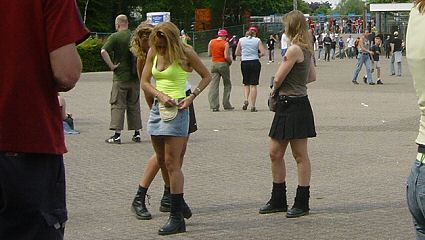
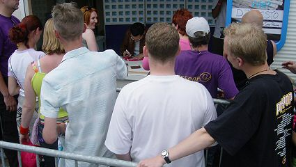
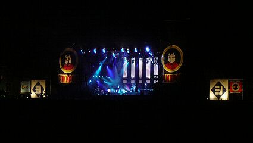

|
Pinkpop 2004 |
Het PLS is verzamelpunt voor veel Pinkpopmedewerkers.
Koempelin toont het CREW-shirt.
De eerste enthousiaste festivalgangers komen binnen.
Op de camping bij Megaland treffen we een uiterst duffe Roda-fan
aan met een 2 liter pak Bar-le-Duc om het vele pils te verdunnen.
Deze heren zijn nog fit genoeg voor een potje campingvoetbal
waarbij het doel de groene container op de achtergrond is.
Met het oog op het naderende EK werd er flink gehandeld in
voetbalshirtjes.
Het hete weer bemoeilijkte de zoektocht naar Rodafans op Pinkpop.
De reservebank...
Flowerpower schijnt weer een beetje terug te komen.
Een voetballende Mexicaan.
Het linkse bovenstukje wellicht eerstdaags in de Roda-fanshop?
Rechts een Oranje-supportster, links een voetbalmeisje met het
rugnummer aan de verkeerde kant, maar dat geeft niet...
Let niet op de twee dames, maar op de Schotse international aan
de rechterzijde waarvan de naam me niet meer te binnen schiet.
En daar staat zowaar een Utrechtsupporter. Nu durf je wel he?!
Ah! Eindelijk weer een Rodasupporter, helaas in een verkeerd shirt.
Misschien dat hij daarom niet herkenbaar op Internet wil.
Wederom een Rodasupporter gesignaleerd.
Dit heeft even niks met voetbal te maken, maar het verliefde stel
wilde graag op de site.
Weer een Roda-supporter gelokaliseerd en
nog wel een northsider
uit Heksenberg.
Rodasupporter Kevin met leuk opschrift.
En ook zijn begeleider kennen we van de zuid-zijde in het PLS.
Jacqueline van de SV is de volgende Roda-klant die we zien.

Favoriet Frankrijk met daarnaast het niet geplaatste Ierland.
De muziek van Seeed was slaapverwekkend.
Crew-member heeft pils van u-16 inbeslaggenomen.
Let niet op het bekertje Breezer maar op het Portugal-shirt met het
rugnummer 2.
Italië en een onduidelijk shirt (Heracles?)

Camera ging per ongeluk af.
Dit vrolijke drietal is handig voorbereid op de naderende bui.
Dit leek meer op een Thai-massage dan op zonnebrandpreventie.
Wat dit met voetbal te maken heeft? De scheenbeschermers he!
Deze meisjes wilden een handtekening van Tiësto.

Voor het geval dat dit niet meer is gelukt hier de dj tijdens zijn
signeersessie.
Wat dit met voetbal te maken heeft? De scheenbeschermers he!
Met nummer 12, Henry - Frankrijk.
Oranjesupporters.
En ja... alweer een Rodasupporter getraceerd!
Deze Rodasupporters tref je overal aan waar gras is: van EHC tot
Pukkelpop en van Roda JC tot Parkpop. Maar nu dus op Pinkpop.

Rodasupporter PeeWee verschijnt in een retro Sovjet-shirt.
Alweer twee Rodafans, en ook nog eens Hanebretboys.

Rodasupporter Jeroen met op de voorgrond een pilske en een pafke
en op de achtergrond de prima act van de Datsuns uit Nieuw-Zeeland.
Hier troffen we ook Rodafan Michel aan.
Maurice de Heus gespot, presentator van SV Limburg Sport.
Het wemelde van de Utrechtenaren.
Ook dit jaar na zonneschijn.....regen.
En daar ontwaren we zowaar Roda-Maurice van de
Schaesbergclan.
Roda-Jos, eveneens van de Schaesbergclan doet
speciaal de
groeten aan thuisblijver David.

Terwijl Muse Pinkpop 2004 afsluit mogen we
concluderen dat er een
aardige correlatie existeert tussen rodafanaten en festivalbeesten!
Tot ziens op Pinkpop 2005.